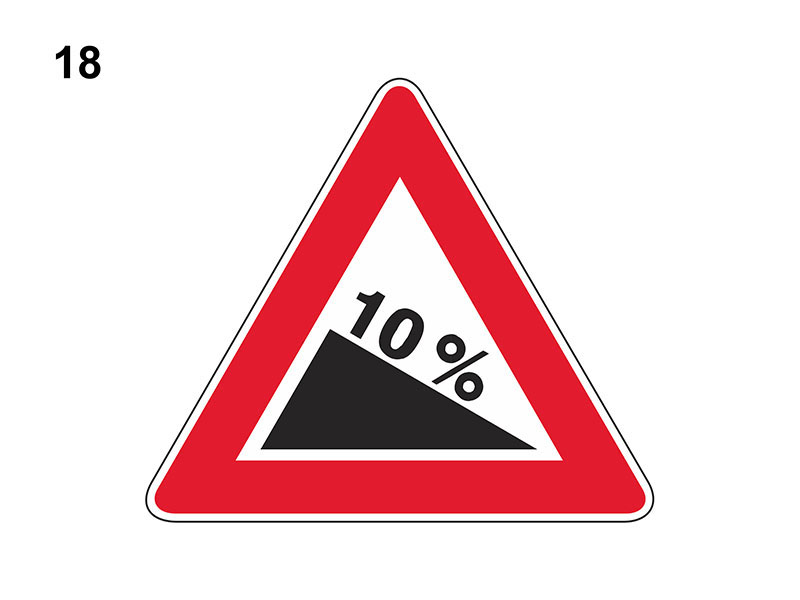

Discesa pericolosa al 10%

E' un segnale di pericolo che preannuncia (di norma a 150 metri) una discesa pericolosa (lungo cui aumenta lo spazio di frenatura del veicolo) e ne specifica la pendenza.
In presenza del segnale:
Non è vero che bisogna marciare con la frizione abbassata.
In presenza del segnale:
- usare maggiore prudenza se la strada è bagnata
- l'inserimento di una marcia bassa consente di sfruttare adeguatamente l'azione frenante del motore
- si deve moderare la velocità per evitare di tamponare veicoli che procedono più lentamente
- bisogna evitare l'uso prolungato dei freni per non surriscaldarli (e quindi rendere inefficiente la frenata)
Non è vero che bisogna marciare con la frizione abbassata.